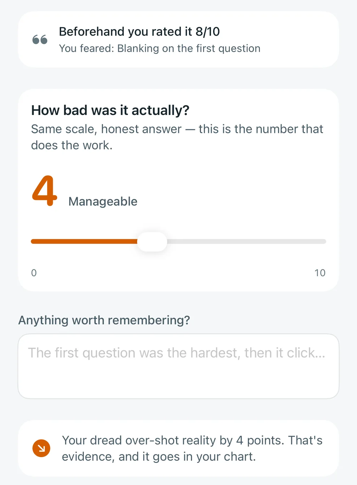
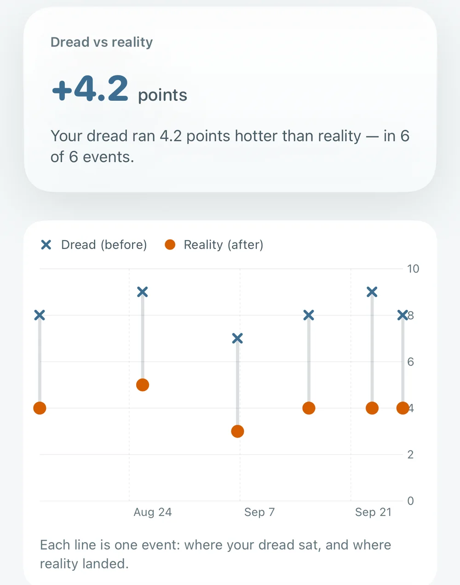
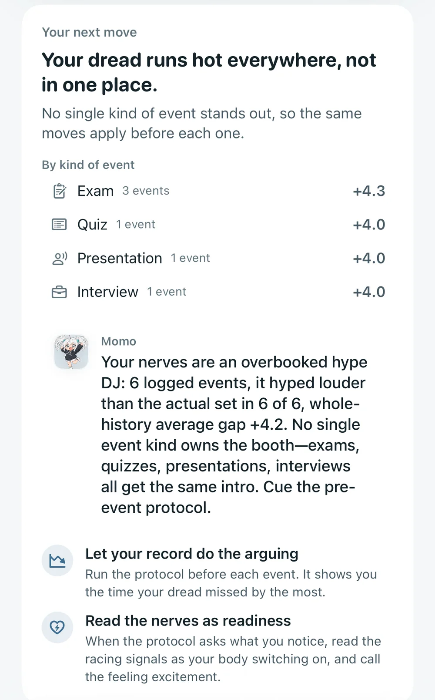

Your dread makes predictions. Psyched keeps the receipts.
Before an exam, a talk or a tryout, rate how bad you expect it to be. Afterward, log how it actually went. Your own record shows how far off the forecast runs.
FreeNo adsNo streaks
Each line is one event: where your dread sat, and where reality landed.
Sixty seconds before you go in
Log what's coming up. When it's close, start the protocol from the event card and Psyched walks you through five short steps.
Name what you notice
Heart pounding, shaky hands, racing thoughts. Tap whatever is happening.
Read it as readiness
Those signals are your body switching on for the moment. Call the feeling excitement.
Hear your own record
A line built from the last time your dread overshot, quoted back to you.
Pick one first move
One concrete action for the first minute, so worry has less room.
Lock in a prediction
Rate how bad you expect it to be, 0 to 10, before you walk in.
Then the honest number
Come back once it's over and rate it on the same scale. Every event becomes one line on your chart, and the pattern starts to talk back.



Screens show example data.
Pick who talks you through it
Five companions say the same thing in different voices. Switch any time.
Momo
Loud. Thinks this is going to be fun.
Your body just brewed free espresso. Drink it and GO.
Jett
Blunt. Tells you to move.
That's fuel. Use it. Go.
Vincent
Deadpan. Quotes your own record back at you.
Your record says you over-estimate this. Statistically, you're fine.
Nina
Warm. Makes you feel understood.
What you're feeling is your body showing up for you.
Ren
Quiet. Has been here before.
Felt like this before mine too. Walked out fine.
Prefer no AI? Turn off AI-written lines in Settings and your companion speaks in lines built into the app.
Seeing the pattern is step one
Step two is doing something with it.
Toolkit
Pick what's coming up, like an exam, a talk, game day or work you've been putting off, and get a few short steps to try this week. Each one comes with a plain summary of the research and a link to the original study.
Get support
When it's more than nerves, Psyched lists crisis and support lines you can call or text where you are, with the emergency number first. Tapping one opens Phone, Messages or the website. Psyched sends nothing.
Why it works this way
Each step in Psyched traces back to a published study. Here is what the researchers found, and the part of the app it shaped. Tap a study to read it.
-
Checking whether a worry came true beat just writing it down
Over ten days, people who went back to see whether each worry had happened ended up worrying less than people who only logged their thoughts. A 2026 phone-app trial from the same lab found the same pattern.
In PsychedAn event joins your chart only once it has both numbers, and Today keeps asking about events still missing an outcome.
-
Comparing the prediction with what happened made practice count
249 adults who feared public speaking gave a series of speeches. Those who compared what they expected with what actually happened ended up less fearful than those who only spoke.
In PsychedThat comparison is the reality rating. Giving the talk is the practice; rating it afterward turns it into evidence.
-
Improvement tracked how far the prediction came down
Across 8,484 practice exercises from 605 patients, the people whose feared predictions dropped the most improved the most.
In PsychedBefore the next event, Psyched quotes your own past gap back to you, right as the next prediction is made.
-
“I’m excited” beat trying to settle down
Across karaoke, public speaking and a math task, people who called their nerves excitement did better than people told to settle down or given no instruction.
In PsychedThe protocol’s one line is “I’m not nervous. I’m ready.” Nothing in the last minute asks you to slow down.
-
What you believe about pressure changes what it does
People who saw pressure as enhancing reported better health and work outcomes, and a few short videos were enough to shift that belief.
In PsychedPsyched never treats your body’s response as a malfunction, and it never praises you for low numbers.
-
The body’s response changed too
People who read their arousal as useful showed a more efficient heart and blood-flow pattern under pressure, and their attention was pulled less toward threats.
In PsychedStep two names the mechanism, a heart pushing oxygen to your brain and muscles, because that is what makes the relabelling believable.
-
Relabeling nerves showed up in the score
Students told that a racing heart helps them scored higher on a practice GRE math section, and on their real GRE math scores one to three months later.
In PsychedStep two explains what your body is doing and asks you to read it as readiness, in the minutes before you start.
-
Worry competes for the attention the task needs
Attentional control theory: worry pulls attention toward threats, so the same work costs more effort, most of all on tasks that depend on focus.
In PsychedStep four asks for one concrete first move, and the whole protocol takes 60 to 90 seconds instead of a long routine.
-
People over-predict how bad it will feel
When forecasting a future event, we tend to overestimate how strong the feeling will be and how long it will last.
In PsychedThis is why you rate dread before and reality after. Your chart is a personal test of the bias, and if your dread turns out accurate, the chart says so.
-
Your own track record is the strongest evidence
Of the sources of belief in your own ability, having actually done it outweighs being told you’ll be fine.
In PsychedStep three shows your numbers, like “You rated the last exam an 8. It came in at a 4,” instead of saying “you’ve got this.”
Private by default
-
Works offline, no account
Everything runs on your iPhone. Signing in is optional.
-
Your entries stay with you
They leave your phone only if you turn on iCloud sync or a Psyched account.
-
Companions never see the details
Their lines are written without your event titles, fears, focus intentions or notes.